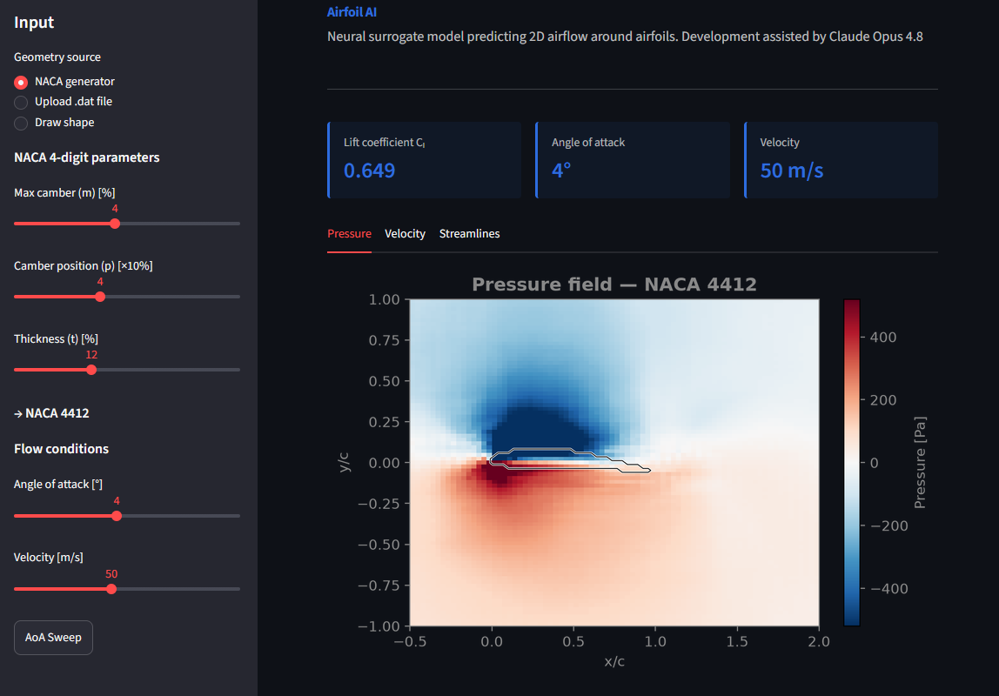
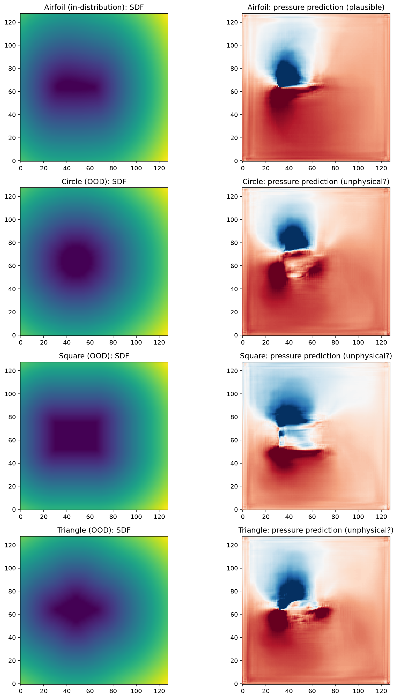

Airfoil AI
What it is
A web app that predicts the flow around a 2D airfoil in under a second. Instead of running a CFD simulation, a neural network trained on 800 RANS simulations from the AirfRANS dataset predicts the pressure and velocity fields directly from the geometry. You can set up the airfoil with NACA 4-digit sliders, upload a coordinate file, or draw one by hand, and the app shows the pressure field, velocity magnitude, streamlines, and a lift curve.
The core idea of replacing a CFD solver with a neural network comes from Thuerey et al. (2020), and the training data is public. Airfoil AI brings three very different inputs into one representation, computes lift from the predicted fields, validates the whole thing against XFOIL, and gets it deployed. The most useful part, in the end, was finding out where the model fails.
Try it
The app is embedded below. Streamlit Community Cloud puts free apps to sleep when nobody is using them, so the first load can take a minute or two. Once it wakes up, it runs normally.

▶ Load the live appHow it works
Data and geometry. AirfRANS is a set of RANS simulations of airfoils at different angles of attack and Reynolds numbers. Each solution is an unstructured point cloud, so I interpolate pressure and velocity onto a regular 128×128 grid around the profile. The airfoil shape enters the network as a signed distance field on the same grid: every pixel stores its distance to the surface, negative inside the profile. All three input modes end up in this one representation, with the flow conditions added as extra channels.
Model. The network is a U-Net with a ResNet34 encoder from segmentation-models-pytorch. It predicts pressure and the two velocity components; velocity magnitude and streamlines are computed from those. Lift is not a network output: the app samples the predicted pressure along the surface and integrates it into a lift coefficient the classical way. The angle-of-attack sweep repeats that from −5° to 15° and draws the whole lift curve, which would otherwise mean a separate CFD run for every angle. Training ran on my GTX 1650 with 4 GB of VRAM.
Trained on airfoils, blind to everything else The model has only ever seen airfoils, and it does not know that anything else exists. Feed it a circle, a square or a triangle through the drawing mode and it happily predicts an airfoil-like flow for all of them: suction on top, stagnation at the front, a wake behind. The predictions look just as confident as for a real airfoil, which is exactly the dangerous part. The network interpolates inside its training distribution instead of solving physics, and it gives no warning when the input leaves it.

Deployment. The app runs on Streamlit Community Cloud. The repository only ships the trained weights and a small file with normalization statistics, so the training dataset never has to leave my machine. The drawing mode goes through the same pipeline as everything else: canvas strokes → coordinates → SDF → prediction.
Key numbers
- 800 RANS simulations (AirfRANS), interpolated to 128×128 grids
- U-Net with ResNet34 encoder, predicting pressure and velocity fields
- Spearman correlation ≈ 0.99 on Cl against XFOIL
- Full lift curve (−5° to 15°) in a few seconds
- Three input modes: NACA sliders, .dat upload, freehand drawing
What I learned
The biggest lesson came from the validation step. The predicted fields look convincing and the correlation with XFOIL is excellent, and it would have been easy to stop there. Only the direct comparison with XFOIL showed the systematic error at high angles of attack, and chasing down the reason taught me more aerodynamics than the training itself.
The second lesson is about what I can honestly call my own. The architecture is off the shelf, the approach comes from a paper, and a good part of the code was written with an AI assistant. So the real work is in the pipeline, validation and knowing the limits of the result.
Links
- Source code on GitHub — model, geometry pipeline, Streamlit app and the XFOIL validation scripts.
- Live app on Streamlit — the same app as above, in its own tab.
- AirfRANS dataset — the RANS dataset used for training.
- Thuerey et al. (2020) — the paper this project builds on.